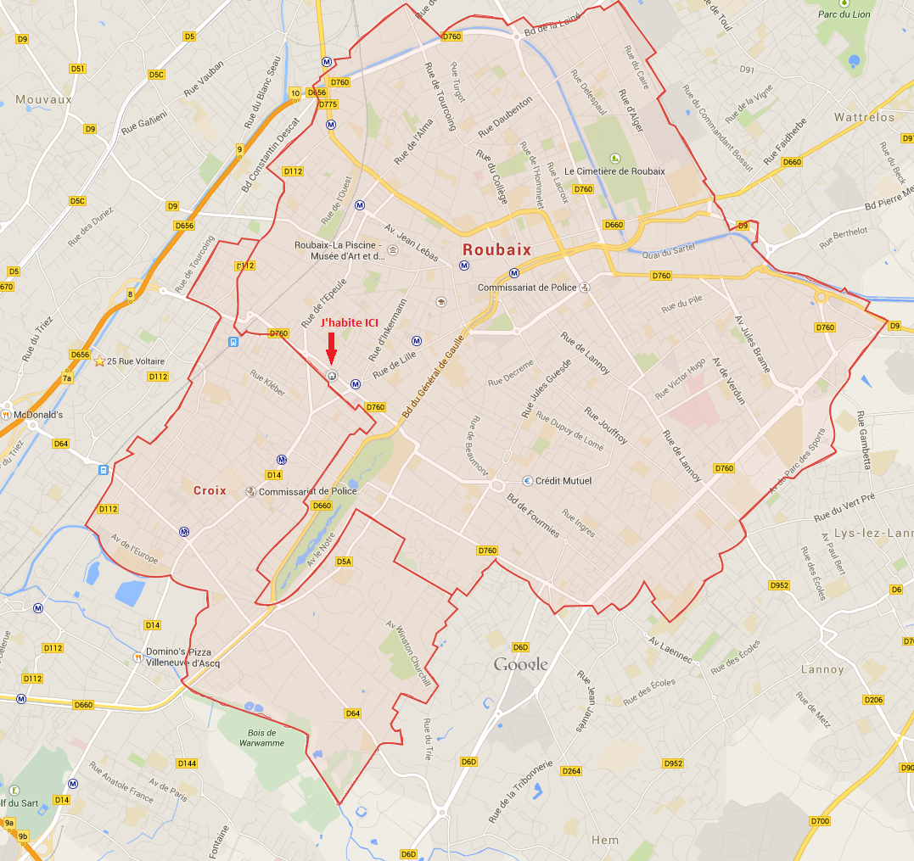

A aujourd'hui ans il effectue un stage de fin d'étude chez le groupe SOPRA-STERIA à la Madeleine auprès de Lille.
Fils de Dominique et Béatrice Rouault, Jocelyn à 2 frères ainées : Sébastien et Antoine.

Jocelyn habite actuellement au N°132, rue d'Isly, à Roubaix.
Roubaix est, d'après cette source, la ville la plus pauvre de France (et la plus "craignos" selon certaines rumeurs).
Situé imméditement au Sud-Ouest de Roubaix se trouve la commune de Croix qui serait,
d'après le classement des 30 villes les plus riches de france, la seconde commune la plus riche après la ville de Neuilly-sur-Seine.
Jocelyn habite presque sur la ligne de démarcation entre les deux communes :
